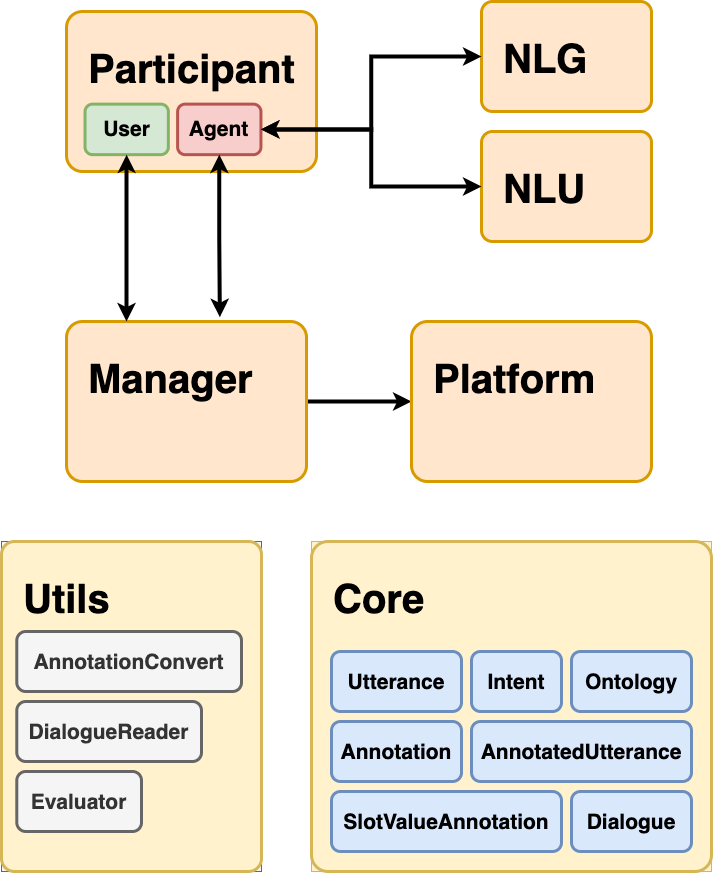

Main concepts¶
{kind=link}
Participant¶
dialoguekit.participant.participant
Agents and users are the participants in a dialog. Generally, it is assumed that the agent is a conversational system and the user is a human. However, the agent might be played by a human (“Wizard-of-Oz”) and the human user might be simulated.
DialogueKit assumes the agent to always start the conversation and also end it. (A user can initialize ending a conversation, but the responsibility lies on the agent to actually stop it.)
Agent¶
Represents a conversational agent with some intelligent capabilities (typically defined by the dialogue policy, natural language understanding, and natural language generation components).
DialogueKit is shipped with some sample agents (TODO: reference sample agents page). These are described below:
ParrotAgent: This agent will welcome the user, but will always parrot (echo) what the user says.
RasaParrotAgent: This agent looks like the ParrotAgent to the user, but is actually just a connector to a Rasa conversational agent. This conversational agent is also part of DialogueKit
MovieBotAgent: A connector agent for IAI MovieBot .
WozAgent: Allows a real human to play the role of the agent (“wizard”) when interacting with a user. This can be useful, e.g., when testing user simulators.
User¶
Represents a human interacting with an agent in natural language text.
Utterance¶
Dialogue participants exchange utterances, which are represented as raw text. To store intent, annotations, or freely definable metadata associated with utterances, dialoguekit.core.annotated_utterance should be used.
Intent¶
The intent represents the action expressed by a participant in an utterance. For example, an agent asking the question “Do you like pizza?” may have the intent to INQUIRE a preference from the user.
Platform¶
dialoguekit.platforms.platform
The platform’s responsibility is to facilitate the conversation. DialogueKit includes a simple terminal-based platform. However, it can support other platforms by facilitating communication via POST requests.
Dialogue Connector¶
dialoguekit.connector.dialogue_connector
Holds and orchestrates the conversation between the participants.
Domain¶
Defines the types of entities and the set of properties (“slots”) for each entity type.
Annotations¶
There are two types of annotations
Intent
dialoguekit.core.intent: represents the dialogue action.SlotValueAnnotation
dialoguekit.core.slot_value_annotation: slot-value pairs, where a slot refers to an entity or a property in the domain.
User preferences¶
Preferences are expressed for specific slot-value pairs, where slots correspond to entities or properties in the domain.